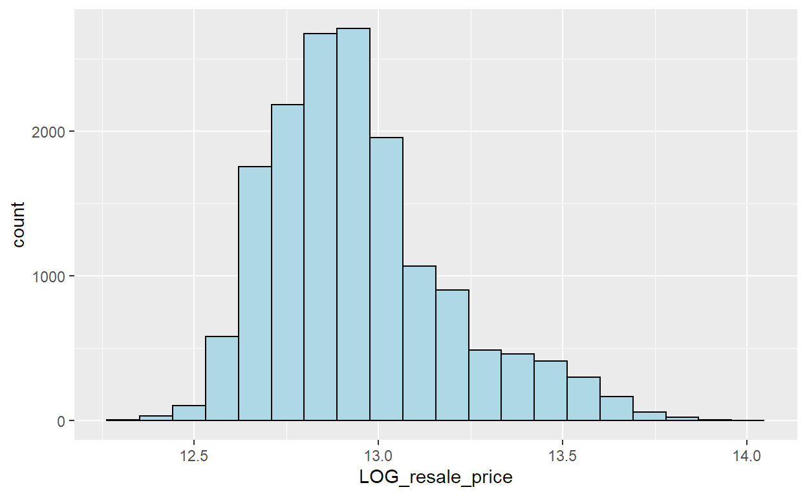
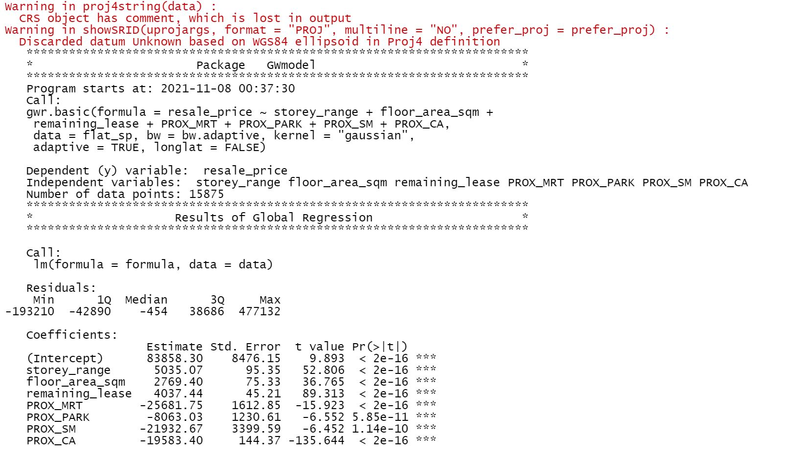
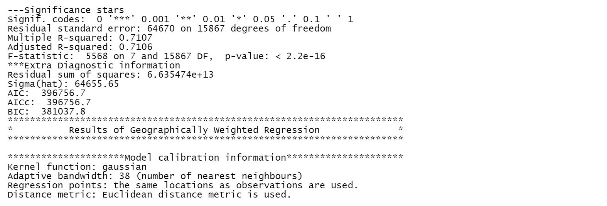
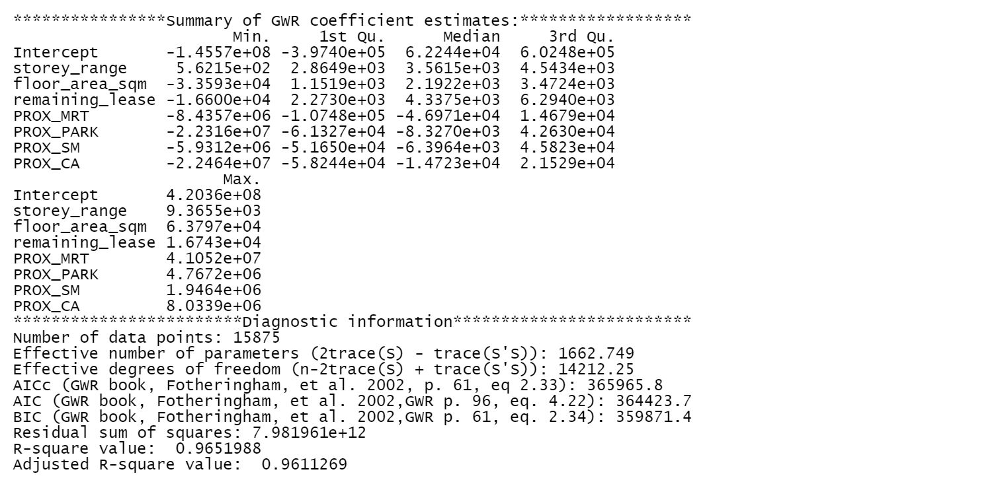

Note!
- For some code chunks, it takes a lot of time to load the outputs, in order for everything to run/knit/push smoothly, I have made some of them eval=FALSE and insert images of their outputs in this webpage. I’m also very sorry that I have disabled all the maps with “view” mode because my Netlify refused to load them.
Data used
- Resale Flat Prices provided by Data.gov.sg. This study focuses on four-room flats with transaction period from 1st January 2019 to 30th September 2020.
- URA Master Plan 2014’s planning subzone boundaries. It is in ESRI shapefile format.
- MRT stations location from data.gov.sg (geojson)
- Parks location from data.gov.sg (geojson)
- supermarkets location from data.gov.sg (geojson)
1. Install packages
packages = c('olsrr', 'corrplot', "ggpubr", 'sf', "spdep", 'GWmodel', 'tmap', 'tidyverse', 'httr', 'jsonlite', 'data.table', 'geosphere')
for (p in packages){
if(!require(p, character.only = T)){
install.packages(p)
}
library(p,character.only = T)
}
- 12 R packages will be used for the following purposes:
- sf, a relatively new R package specially designed to import, manage and process vector-based geospatial data in R.
- tidyverse for performing data science tasks such as importing, wrangling and visualising attribute data.
- spdep for computing spatial weights, global and local spatial autocorrelation statistics
- tmap which provides functions for plotting static or interactive choropleth maps.
- olsrr for building OLS and performing diagnostics tests
- GWmodel for calibrating geographical weighted family of models
- corrplot for multivariate data visualisation and analysis
- ggpubr for organising graphs
- httr for geting data from API
- jsonlite for pasring JSON results
- data.table for CJ() function which produces a data.table out of two vectors
- geosphere for distHaversine() function which ‘Haversine’ great circle distance
2. Geospatial Data Wrangling
a. import and transform data projection
mpsz = st_read(dsn = "data/MP", layer = "MP14_SUBZONE_WEB_PL")
Reading layer `MP14_SUBZONE_WEB_PL' from data source `C:\yiling-yu\IS415_Blog\_posts\2021-11-05-take-home-exercise-3\data\MP' using driver `ESRI Shapefile'
Simple feature collection with 323 features and 15 fields
Geometry type: MULTIPOLYGON
Dimension: XY
Bounding box: xmin: 2667.538 ymin: 15748.72 xmax: 56396.44 ymax: 50256.33
Projected CRS: SVY21mpsz <- st_transform(mpsz, 3414)
st_crs(mpsz)
Coordinate Reference System:
User input: EPSG:3414
wkt:
PROJCRS["SVY21 / Singapore TM",
BASEGEOGCRS["SVY21",
DATUM["SVY21",
ELLIPSOID["WGS 84",6378137,298.257223563,
LENGTHUNIT["metre",1]]],
PRIMEM["Greenwich",0,
ANGLEUNIT["degree",0.0174532925199433]],
ID["EPSG",4757]],
CONVERSION["Singapore Transverse Mercator",
METHOD["Transverse Mercator",
ID["EPSG",9807]],
PARAMETER["Latitude of natural origin",1.36666666666667,
ANGLEUNIT["degree",0.0174532925199433],
ID["EPSG",8801]],
PARAMETER["Longitude of natural origin",103.833333333333,
ANGLEUNIT["degree",0.0174532925199433],
ID["EPSG",8802]],
PARAMETER["Scale factor at natural origin",1,
SCALEUNIT["unity",1],
ID["EPSG",8805]],
PARAMETER["False easting",28001.642,
LENGTHUNIT["metre",1],
ID["EPSG",8806]],
PARAMETER["False northing",38744.572,
LENGTHUNIT["metre",1],
ID["EPSG",8807]]],
CS[Cartesian,2],
AXIS["northing (N)",north,
ORDER[1],
LENGTHUNIT["metre",1]],
AXIS["easting (E)",east,
ORDER[2],
LENGTHUNIT["metre",1]],
USAGE[
SCOPE["Cadastre, engineering survey, topographic mapping."],
AREA["Singapore - onshore and offshore."],
BBOX[1.13,103.59,1.47,104.07]],
ID["EPSG",3414]]st_bbox(mpsz) #view extent
xmin ymin xmax ymax
2667.538 15748.721 56396.440 50256.334 3. Aspatial Data Wrangling for resale flat data
a. import data
resale_flat = read_csv("data/resale-flat-prices/resale-flat-prices-based-on-registration-date-from-jan-2017-onwards.csv")
glimpse(resale_flat)
Rows: 111,933
Columns: 11
$ month <chr> "2017-01", "2017-01", "2017-01", "2017-0~
$ town <chr> "ANG MO KIO", "ANG MO KIO", "ANG MO KIO"~
$ flat_type <chr> "2 ROOM", "3 ROOM", "3 ROOM", "3 ROOM", ~
$ block <chr> "406", "108", "602", "465", "601", "150"~
$ street_name <chr> "ANG MO KIO AVE 10", "ANG MO KIO AVE 4",~
$ storey_range <chr> "10 TO 12", "01 TO 03", "01 TO 03", "04 ~
$ floor_area_sqm <dbl> 44, 67, 67, 68, 67, 68, 68, 67, 68, 67, ~
$ flat_model <chr> "Improved", "New Generation", "New Gener~
$ lease_commence_date <dbl> 1979, 1978, 1980, 1980, 1980, 1981, 1979~
$ remaining_lease <chr> "61 years 04 months", "60 years 07 month~
$ resale_price <dbl> 232000, 250000, 262000, 265000, 265000, ~b. filter data by date and by room type
#transaction period from 1st January 2019 to 30th September 2020
#add dummy dates
resale_flat$date <- paste(resale_flat$month,"01",sep = "-")
#make the data type date
resale_flat$date <- as.Date(resale_flat$date, format= "%Y-%m-%d")
#filter data
resale_flat <- subset(resale_flat, date > "2018-12-31" & date < "2020-10-01")
#four-room flats
#filter data
resale_flat <- resale_flat[(resale_flat$flat_type == "4 ROOM"),]
#peek the dataframe
glimpse(resale_flat)
Rows: 15,901
Columns: 12
$ month <chr> "2019-01", "2019-01", "2019-01", "2019-0~
$ town <chr> "ANG MO KIO", "ANG MO KIO", "ANG MO KIO"~
$ flat_type <chr> "4 ROOM", "4 ROOM", "4 ROOM", "4 ROOM", ~
$ block <chr> "204", "175", "543", "118", "411", "546"~
$ street_name <chr> "ANG MO KIO AVE 3", "ANG MO KIO AVE 4", ~
$ storey_range <chr> "01 TO 03", "07 TO 09", "01 TO 03", "04 ~
$ floor_area_sqm <dbl> 92, 91, 92, 99, 92, 92, 92, 92, 93, 91, ~
$ flat_model <chr> "New Generation", "New Generation", "New~
$ lease_commence_date <dbl> 1977, 1981, 1981, 1978, 1979, 1981, 1978~
$ remaining_lease <chr> "57 years", "61 years 06 months", "61 ye~
$ resale_price <dbl> 330000, 360000, 370000, 375000, 380000, ~
$ date <date> 2019-01-01, 2019-01-01, 2019-01-01, 201~c. Get longitude and latitude for flat address using OneMap API
1) create address column
month town flat_type
Length:15901 Length:15901 Length:15901
Class :character Class :character Class :character
Mode :character Mode :character Mode :character
block street_name storey_range
Length:15901 Length:15901 Length:15901
Class :character Class :character Class :character
Mode :character Mode :character Mode :character
floor_area_sqm flat_model lease_commence_date
Min. : 74.00 Length:15901 Min. :1967
1st Qu.: 91.00 Class :character 1st Qu.:1987
Median : 93.00 Mode :character Median :1998
Mean : 95.15 Mean :1999
3rd Qu.:102.00 3rd Qu.:2013
Max. :138.00 Max. :2018
remaining_lease resale_price date
Length:15901 Min. : 218000 Min. :2019-01-01
Class :character 1st Qu.: 353000 1st Qu.:2019-06-01
Mode :character Median : 405000 Median :2019-11-01
Mean : 433589 Mean :2019-11-07
3rd Qu.: 470000 3rd Qu.:2020-06-01
Max. :1186888 Max. :2020-09-01
address
Length:15901
Class :character
Mode :character
length(resale_flat[["address"]])
[1] 15901[1] 5057- There are duplicated addresses
2) prepare api, get data and clean data
url <- "https://developers.onemap.sg/commonapi/search?"
getCOOR <- function(object) {
raw_response <- httr::GET(url,
query = list(searchVal = object,
returnGeom = "Y",
getAddrDetails = "Y"))
text_response <- content(raw_response, as = "text", encoding = "UTF-8")
json_response <- jsonlite::fromJSON(text_response, flatten = TRUE)
}
#apply the function over the 'address' column in the dataframe
results <- lapply(resale_flat$address, getCOOR)
Now the results look like this:  I would like to subtract only the ‘results’ part of the results.
I would like to subtract only the ‘results’ part of the results.
Now each list in the results list is a dataframe. Each dataframe is the api result corresponding to each row in the resale_flat ‘address’ colomun. In order to know which dataframe corresponding to which row, I would like to add the list index to each dataframe as a column. (Eg, results[[25]] should be a dataframe with column ‘index’ == 25 )
Now the results look like this, you can see the ‘index’ column has been added: If the api did not respond properly, it will not return anything and the respective list will end up just with the index created just now.  I would like to see how many of these lists with length 1 are there in the results
I would like to see how many of these lists with length 1 are there in the results
There are 26 of them: I would like to remove these lists of integer from the results in order to bind the dataframes later properly
Now, make the result a dataframe by using bind_rows() from dplyr package and save the resulted dataframe as a csv for later usage
df <- bind_rows(new_result)
write.csv(df,"api_results.csv", row.names = FALSE)
3) combine api results into orginial resale_flat dataframe
api = read_csv("api_results.csv")
head(api,20)
# A tibble: 20 x 12
SEARCHVAL BLK_NO ROAD_NAME BUILDING ADDRESS POSTAL X Y
<chr> <chr> <chr> <chr> <chr> <chr> <dbl> <dbl>
1 ANG MO KI~ 204 ANG MO KI~ ANG MO ~ 204 ANG~ 560204 29180. 38822.
2 KEBUN BAR~ 175 ANG MO KI~ KEBUN B~ 175 ANG~ 560175 28423. 39746.
3 CHENG SAN~ 543 ANG MO KI~ CHENG S~ 543 ANG~ 560543 30550. 39589.
4 KEBUN BAR~ 118 ANG MO KI~ KEBUN B~ 118 ANG~ 560118 28240. 39478.
5 TECK GHEE~ 411 ANG MO KI~ TECK GH~ 411 ANG~ 560411 30443. 38383.
6 CHENG SAN~ 546 ANG MO KI~ CHENG S~ 546 ANG~ 560546 30638. 39517.
7 CHONG BOO~ 428 ANG MO KI~ CHONG B~ 428 ANG~ 560428 30347. 38996.
8 KEBUN BAR~ 173 ANG MO KI~ KEBUN B~ 173 ANG~ 560173 28326. 39701.
9 YIO CHU K~ 607 ANG MO KI~ YIO CHU~ 607 ANG~ 560607 28612. 40271.
10 YIO CHU K~ 603 ANG MO KI~ YIO CHU~ 603 ANG~ 560603 28271. 40241.
11 CHENG SAN~ 511 ANG MO KI~ CHENG S~ 511 ANG~ 560511 29874. 39508.
12 205 ANG M~ 205 ANG MO KI~ NIL 205 ANG~ 560205 29142. 38775.
13 CHONG BOO~ 433 ANG MO KI~ CHONG B~ 433 ANG~ 560433 30341. 38900.
14 YIO CHU K~ 610 ANG MO KI~ YIO CHU~ 610 ANG~ 560610 28650. 40152.
15 THE SALVA~ 610 ANG MO KI~ THE SAL~ 610 ANG~ 560610 28650. 40152.
16 TECK GHEE~ 335 ANG MO KI~ TECK GH~ 335 ANG~ 560335 29933. 38362.
17 TECK GHEE~ 312 ANG MO KI~ TECK GH~ 312 ANG~ 560312 29720. 38693.
18 ANG MO KI~ 326 ANG MO KI~ ANG MO ~ 326 ANG~ 560326 29623. 38789.
19 YIO CHU K~ 627 ANG MO KI~ YIO CHU~ 627 ANG~ 560627 28896. 40422.
20 TECK GHEE~ 310C ANG MO KI~ TECK GH~ 310C AN~ 563310 29283. 38517.
# ... with 4 more variables: LATITUDE <dbl>, LONGITUDE <dbl>,
# LONGTITUDE <dbl>, index <dbl>We can see there are some rows with the same index, such as index 14. This is because there may be more than 1 buildings with the same address and OneMap API will return both buildings for that particular address. Since we are not interested in the buildings for this study and only interested in the longitude and latitude of the address, I will delete duplicated rows using distinct() in the dplyr package and only leave one building for one address.
new_api <- distinct(api, index, .keep_all = TRUE)
head(new_api,20)
# A tibble: 20 x 12
SEARCHVAL BLK_NO ROAD_NAME BUILDING ADDRESS POSTAL X Y
<chr> <chr> <chr> <chr> <chr> <chr> <dbl> <dbl>
1 ANG MO KI~ 204 ANG MO KI~ ANG MO ~ 204 ANG~ 560204 29180. 38822.
2 KEBUN BAR~ 175 ANG MO KI~ KEBUN B~ 175 ANG~ 560175 28423. 39746.
3 CHENG SAN~ 543 ANG MO KI~ CHENG S~ 543 ANG~ 560543 30550. 39589.
4 KEBUN BAR~ 118 ANG MO KI~ KEBUN B~ 118 ANG~ 560118 28240. 39478.
5 TECK GHEE~ 411 ANG MO KI~ TECK GH~ 411 ANG~ 560411 30443. 38383.
6 CHENG SAN~ 546 ANG MO KI~ CHENG S~ 546 ANG~ 560546 30638. 39517.
7 CHONG BOO~ 428 ANG MO KI~ CHONG B~ 428 ANG~ 560428 30347. 38996.
8 KEBUN BAR~ 173 ANG MO KI~ KEBUN B~ 173 ANG~ 560173 28326. 39701.
9 YIO CHU K~ 607 ANG MO KI~ YIO CHU~ 607 ANG~ 560607 28612. 40271.
10 YIO CHU K~ 603 ANG MO KI~ YIO CHU~ 603 ANG~ 560603 28271. 40241.
11 CHENG SAN~ 511 ANG MO KI~ CHENG S~ 511 ANG~ 560511 29874. 39508.
12 205 ANG M~ 205 ANG MO KI~ NIL 205 ANG~ 560205 29142. 38775.
13 CHONG BOO~ 433 ANG MO KI~ CHONG B~ 433 ANG~ 560433 30341. 38900.
14 YIO CHU K~ 610 ANG MO KI~ YIO CHU~ 610 ANG~ 560610 28650. 40152.
15 TECK GHEE~ 335 ANG MO KI~ TECK GH~ 335 ANG~ 560335 29933. 38362.
16 TECK GHEE~ 312 ANG MO KI~ TECK GH~ 312 ANG~ 560312 29720. 38693.
17 ANG MO KI~ 326 ANG MO KI~ ANG MO ~ 326 ANG~ 560326 29623. 38789.
18 YIO CHU K~ 627 ANG MO KI~ YIO CHU~ 627 ANG~ 560627 28896. 40422.
19 TECK GHEE~ 310C ANG MO KI~ TECK GH~ 310C AN~ 563310 29283. 38517.
20 AMK CENTR~ 700A ANG MO KI~ AMK CEN~ 700A AN~ 561700 29420. 39110.
# ... with 4 more variables: LATITUDE <dbl>, LONGITUDE <dbl>,
# LONGTITUDE <dbl>, index <dbl>I would like to create an id column for resale_flat dataframe to indicate its index so that we can bind the resale_flat and new_api dataframes with id==index.
# A tibble: 6 x 14
month town flat_type block street_name storey_range floor_area_sqm
<chr> <chr> <chr> <chr> <chr> <chr> <dbl>
1 2019-01 ANG MO KIO 4 ROOM 204 ANG MO KIO~ 01 TO 03 92
2 2019-01 ANG MO KIO 4 ROOM 175 ANG MO KIO~ 07 TO 09 91
3 2019-01 ANG MO KIO 4 ROOM 543 ANG MO KIO~ 01 TO 03 92
4 2019-01 ANG MO KIO 4 ROOM 118 ANG MO KIO~ 04 TO 06 99
5 2019-01 ANG MO KIO 4 ROOM 411 ANG MO KIO~ 04 TO 06 92
6 2019-01 ANG MO KIO 4 ROOM 546 ANG MO KIO~ 10 TO 12 92
# ... with 7 more variables: flat_model <chr>,
# lease_commence_date <dbl>, remaining_lease <chr>,
# resale_price <dbl>, date <date>, address <chr>, id <int>Match and join the two dataframes with id==index
# A tibble: 6 x 25
month town flat_type block street_name storey_range floor_area_sqm
<chr> <chr> <chr> <chr> <chr> <chr> <dbl>
1 2019-01 ANG MO KIO 4 ROOM 204 ANG MO KIO~ 01 TO 03 92
2 2019-01 ANG MO KIO 4 ROOM 175 ANG MO KIO~ 07 TO 09 91
3 2019-01 ANG MO KIO 4 ROOM 543 ANG MO KIO~ 01 TO 03 92
4 2019-01 ANG MO KIO 4 ROOM 118 ANG MO KIO~ 04 TO 06 99
5 2019-01 ANG MO KIO 4 ROOM 411 ANG MO KIO~ 04 TO 06 92
6 2019-01 ANG MO KIO 4 ROOM 546 ANG MO KIO~ 10 TO 12 92
# ... with 18 more variables: flat_model <chr>,
# lease_commence_date <dbl>, remaining_lease <chr>,
# resale_price <dbl>, date <date>, address <chr>, id <dbl>,
# SEARCHVAL <chr>, BLK_NO <chr>, ROAD_NAME <chr>, BUILDING <chr>,
# ADDRESS <chr>, POSTAL <chr>, X <dbl>, Y <dbl>, LATITUDE <dbl>,
# LONGITUDE <dbl>, LONGTITUDE <dbl>See through the dataframe, it is joined correctly.
4) further data cleaning
Let’s select only the meaningful columns and simplify the dataframe.
flat_coor <- flat_coor[,c("id", "month","storey_range","floor_area_sqm","flat_model","lease_commence_date","remaining_lease","resale_price","address","LATITUDE","LONGITUDE")]
There should be 26 addresses without any coordinates as api failed to return, drop them.
[1] 26which(which_nas)
[1] 917 1536 1537 2270 3091 3938 4742 4745 4746 5560 5561
[12] 6341 6342 6347 8011 8012 8788 8789 8790 9609 12354 13308
[23] 14282 15314 15315 15316flat_df <- flat_coor %>% drop_na()
4. Aspatial Data Wrangling for locational factors
a. Proximity to MRT
a) import data
MRT_sf <- st_read("data/locations/MRT/master-plan-2019-rail-station-layer-geojson.geojson")
Reading layer `master-plan-2019-rail-station-layer-geojson' from data source `C:\yiling-yu\IS415_Blog\_posts\2021-11-05-take-home-exercise-3\data\locations\MRT\master-plan-2019-rail-station-layer-geojson.geojson' using driver `GeoJSON'
Simple feature collection with 257 features and 2 fields
Geometry type: MULTIPOLYGON
Dimension: XYZ
Bounding box: xmin: 103.6363 ymin: 1.251433 xmax: 104.0051 ymax: 1.449548
z_range: zmin: 0 zmax: 0
Geodetic CRS: WGS 84b) get centroid coornidates of each multipolygon
#get centroids
MRT_sf$centroids <- st_centroid(MRT_sf$geometry) %>% st_geometry()
#transform centroids
MRT_sf$centroids <- st_transform(MRT_sf$centroids, 4326)
#separate centroids into longitude and latitude and put into original dataframe
MRT_sf2 <- do.call(rbind, st_geometry(MRT_sf$centroids)) %>%
as_tibble() %>%
setNames(c("lon", "lat"))
MRT_sf$lon <- MRT_sf2$lon
MRT_sf$lat <- MRT_sf2$lat
c) get the distance between the nearest MRT coordinate for each flat address
# create a dataframe for all flat and mrt locations pairs
flat_mrt <- CJ(flat_df$id, MRT_sf$Name)
names(flat_mrt) <- c("Flat", "MRT")
# create datatables for dataframes
flat_DT <- setDT(flat_df)
MRT_DT <- setDT(MRT_sf)
# add coordinates of flats
flat_mrt$flat_lat <- flat_DT$LATITUDE[match(flat_mrt$Flat, flat_DT$id)]
flat_mrt$flat_lon <- flat_DT$LONGITUDE[match(flat_mrt$Flat, flat_DT$id)]
# add coordinates of MRTs
flat_mrt$MRT_lat <- MRT_DT$lat[match(flat_mrt$MRT, MRT_DT$Name)]
flat_mrt$MRT_lon <- MRT_DT$lon[match(flat_mrt$MRT, MRT_DT$Name)]
# calculate distances
flat_mrt[, `:=`(dist, distHaversine(matrix(c(flat_lon, flat_lat), ncol = 2), matrix(c(MRT_lon, MRT_lat), ncol = 2)))]
# get the distance between the nearest MRT coordinate for each flat address
flat_mrt <- flat_mrt[, .(MRT = MRT[which.min(dist)], dist = min(dist)),
by = Flat]
head(flat_mrt)
Flat MRT dist
1: 1 kml_238 221.1832
2: 2 kml_214 404.1595
3: 3 kml_236 806.4837
4: 4 kml_214 196.4719
5: 5 kml_236 825.1725
6: 6 kml_235 793.2510b. Proximity to park
a) import data
park_sf <- st_read("data/locations/parks/parks-geojson.geojson")
Reading layer `parks-geojson' from data source `C:\yiling-yu\IS415_Blog\_posts\2021-11-05-take-home-exercise-3\data\locations\parks\parks-geojson.geojson' using driver `GeoJSON'
Simple feature collection with 350 features and 2 fields
Geometry type: POINT
Dimension: XYZ
Bounding box: xmin: 103.6929 ymin: 1.214058 xmax: 104.0017 ymax: 1.461503
z_range: zmin: 0 zmax: 0
Geodetic CRS: WGS 84b) transform coordinates to lat long
#transform geometry coordinates
park_sf$geometry <- st_transform(park_sf$geometry, 4326)
#separate geometry into longitude and latitude and put into original dataframe
park_sf2 <- do.call(rbind, st_geometry(park_sf$geometry)) %>%
as_tibble() %>%
setNames(c("lon", "lat"))
park_sf$lon <- park_sf2$lon
park_sf$lat <- park_sf2$lat
c) get the distance between the nearest Park coordinate for each flat address
# create a dataframe for all flat and park locations pairs
flat_park <- CJ(flat_df$id, park_sf$Name)
names(flat_park) <- c("Flat", "park")
# create datatables for dataframes
flat_DT <- setDT(flat_df)
park_DT <- setDT(park_sf)
# add coordinates of flats
flat_park$flat_lat <- flat_DT$LATITUDE[match(flat_park$Flat, flat_DT$id)]
flat_park$flat_lon <- flat_DT$LONGITUDE[match(flat_park$Flat, flat_DT$id)]
# add coordinates of parks
flat_park$park_lat <- park_DT$lat[match(flat_park$park, park_DT$Name)]
flat_park$park_lon <- park_DT$lon[match(flat_park$park, park_DT$Name)]
# calculate distances
flat_park[, `:=`(dist, distHaversine(matrix(c(flat_lon, flat_lat), ncol = 2), matrix(c(park_lon, park_lat), ncol = 2)))]
# get the distance between the nearest park coordinate for each flat address
flat_park <- flat_park[, .(park = park[which.min(dist)], dist = min(dist)),
by = Flat]
head(flat_park)
Flat park dist
1: 1 kml_240 749.9838
2: 2 kml_325 431.2196
3: 3 kml_233 781.5487
4: 4 kml_153 178.3932
5: 5 kml_205 913.7259
6: 6 kml_233 824.3549c. Proximity to supermarket
a) import data
SM_sf <- st_read("data/locations/supermarkets/supermarkets-geojson.geojson")
Reading layer `supermarkets-geojson' from data source `C:\yiling-yu\IS415_Blog\_posts\2021-11-05-take-home-exercise-3\data\locations\supermarkets\supermarkets-geojson.geojson' using driver `GeoJSON'
Simple feature collection with 526 features and 2 fields
Geometry type: POINT
Dimension: XYZ
Bounding box: xmin: 103.6258 ymin: 1.24715 xmax: 104.0036 ymax: 1.461526
z_range: zmin: 0 zmax: 0
Geodetic CRS: WGS 84b) transform coordinates to lat long
#transform geometry coordinates
SM_sf$geometry <- st_transform(SM_sf$geometry, 4326)
#separate geometry into longitude and latitude and put into original dataframe
SM_sf2 <- do.call(rbind, st_geometry(SM_sf$geometry)) %>%
as_tibble() %>%
setNames(c("lon", "lat"))
SM_sf$lon <- SM_sf2$lon
SM_sf$lat <- SM_sf2$lat
c) get the distance between the nearest supermarket coordinate for each flat address
# create a dataframe for all flat and SM locations pairs
flat_SM <- CJ(flat_df$id, SM_sf$Name)
names(flat_SM) <- c("Flat", "SM")
# create datatables for dataframes
flat_DT <- setDT(flat_df)
SM_DT <- setDT(SM_sf)
# add coordinates of flats
flat_SM$flat_lat <- flat_DT$LATITUDE[match(flat_SM$Flat, flat_DT$id)]
flat_SM$flat_lon <- flat_DT$LONGITUDE[match(flat_SM$Flat, flat_DT$id)]
# add coordinates of SMs
flat_SM$SM_lat <- SM_DT$lat[match(flat_SM$SM, SM_DT$Name)]
flat_SM$SM_lon <- SM_DT$lon[match(flat_SM$SM, SM_DT$Name)]
# calculate distances
flat_SM[, `:=`(dist, distHaversine(matrix(c(flat_lon, flat_lat), ncol = 2), matrix(c(SM_lon, SM_lat), ncol = 2)))]
# get the distance between the nearest SM coordinate for each flat address
flat_SM <- flat_SM[, .(SM = SM[which.min(dist)], dist = min(dist)),
by = Flat]
head(flat_SM)
Flat SM dist
1: 1 kml_192 271.0214
2: 2 kml_509 310.7737
3: 3 kml_40 319.4650
4: 4 kml_509 458.8342
5: 5 kml_7 338.9454
6: 6 kml_229 314.6732d. Proximity to Central Area of Singapore
According to Wikipeida, the coordinates of Central Area of Singapore is 1°17′30″N 103°51′00″E, which is equal to 1.291667, 103.85 in decimal format according to GeoHack.
a) create a dataframe
Name <- c('Central Area')
lon <- as.numeric(c(103.85))
lat <- as.numeric(c(1.291667))
CA_sf <- data.frame(Name, lon, lat)
CA_sf
Name lon lat
1 Central Area 103.85 1.291667b) get the distance between Central Area and each flat address
# create a dataframe for all flat and CA location pairs
flat_CA <- CJ(flat_df$id, CA_sf$Name)
names(flat_CA) <- c("Flat", "CA")
# create datatables for dataframes
flat_DT <- setDT(flat_df)
CA_DT <- setDT(CA_sf)
# add coordinates of flats
flat_CA$flat_lat <- flat_DT$LATITUDE[match(flat_CA$Flat, flat_DT$id)]
flat_CA$flat_lon <- flat_DT$LONGITUDE[match(flat_CA$Flat, flat_DT$id)]
# add coordinates of CAs
flat_CA$CA_lat <- CA_DT$lat[match(flat_CA$CA, CA_DT$Name)]
flat_CA$CA_lon <- CA_DT$lon[match(flat_CA$CA, CA_DT$Name)]
# calculate distances
flat_CA[, `:=`(dist, distHaversine(matrix(c(flat_lon, flat_lat), ncol = 2), matrix(c(CA_lon, CA_lat), ncol = 2)))]
# get the distance between the nearest CA coordinate for each flat address
flat_CA <- flat_CA[, .(CA = CA[which.min(dist)], dist = min(dist)),
by = Flat]
head(flat_CA)
Flat CA dist
1: 1 Central Area 8454.061
2: 2 Central Area 9466.131
3: 3 Central Area 9224.930
4: 4 Central Area 9229.536
5: 5 Central Area 8006.289
6: 6 Central Area 9159.8425. Combining all aspatial Data, adding location factors into flat_df
a) change unit from meter to km
flat_mrt$dist <- (flat_mrt$dist/1000)
flat_park$dist <- (flat_park$dist/1000)
flat_SM$dist <- (flat_SM$dist/1000)
flat_CA$dist <- (flat_CA$dist/1000)
b) rename columns
c) combine dataframes
flat_df <- left_join(flat_df, flat_mrt, by = c('id' = 'Flat'))
flat_df <- left_join(flat_df, flat_park, by = c('id' = 'Flat'))
flat_df <- left_join(flat_df, flat_SM, by = c('id' = 'Flat'))
flat_df <- left_join(flat_df, flat_CA, by = c('id' = 'Flat'))
flat_df <- flat_df[,c("id", "month","storey_range","floor_area_sqm","flat_model","lease_commence_date","remaining_lease","resale_price","address","LATITUDE","LONGITUDE",'PROX_MRT','PROX_PARK','PROX_SM',"PROX_CA")]
d) further cleaning
# make storey_range to a number, take the lower one
flat_df$storey_range <- gsub(" .*$", "", flat_df$storey_range) %>%
as.numeric()
# make remaining_lease to a number, take the year
flat_df$remaining_lease <- gsub(" .*$", "", flat_df$remaining_lease) %>%
as.numeric()
glimpse(flat_df)
Rows: 15,875
Columns: 15
$ id <dbl> 1, 2, 3, 4, 5, 6, 7, 8, 9, 10, 11, 12, 1~
$ month <chr> "2019-01", "2019-01", "2019-01", "2019-0~
$ storey_range <dbl> 1, 7, 1, 4, 4, 10, 7, 4, 10, 7, 7, 7, 10~
$ floor_area_sqm <dbl> 92, 91, 92, 99, 92, 92, 92, 92, 93, 91, ~
$ flat_model <chr> "New Generation", "New Generation", "New~
$ lease_commence_date <dbl> 1977, 1981, 1981, 1978, 1979, 1981, 1978~
$ remaining_lease <dbl> 57, 61, 61, 58, 59, 61, 58, 62, 60, 60, ~
$ resale_price <dbl> 330000, 360000, 370000, 375000, 380000, ~
$ address <chr> "204 ANG MO KIO AVE 3", "175 ANG MO KIO ~
$ LATITUDE <dbl> 1.367368, 1.375723, 1.374301, 1.373296, ~
$ LONGITUDE <dbl> 103.8439, 103.8371, 103.8562, 103.8355, ~
$ PROX_MRT <dbl> 0.2211832, 0.4041595, 0.8064837, 0.19647~
$ PROX_PARK <dbl> 0.7499838, 0.4312196, 0.7815487, 0.17839~
$ PROX_SM <dbl> 0.2710214, 0.3107737, 0.3194650, 0.45883~
$ PROX_CA <dbl> 8.454061, 9.466131, 9.224930, 9.229536, ~e) convert dataframe into a sf object
flat_sf <- st_as_sf(flat_df,
coords = c("LONGITUDE", "LATITUDE"),
crs=4326) %>%
st_transform(crs=3414)
head(flat_sf)
Simple feature collection with 6 features and 13 fields
Geometry type: POINT
Dimension: XY
Bounding box: xmin: 28240.06 ymin: 38382.85 xmax: 30637.92 ymax: 39745.94
Projected CRS: SVY21 / Singapore TM
id month storey_range floor_area_sqm flat_model
1 1 2019-01 1 92 New Generation
2 2 2019-01 7 91 New Generation
3 3 2019-01 1 92 New Generation
4 4 2019-01 4 99 New Generation
5 5 2019-01 4 92 New Generation
6 6 2019-01 10 92 New Generation
lease_commence_date remaining_lease resale_price
1 1977 57 330000
2 1981 61 360000
3 1981 61 370000
4 1978 58 375000
5 1979 59 380000
6 1981 61 380000
address PROX_MRT PROX_PARK PROX_SM PROX_CA
1 204 ANG MO KIO AVE 3 0.2211832 0.7499838 0.2710214 8.454061
2 175 ANG MO KIO AVE 4 0.4041595 0.4312196 0.3107737 9.466131
3 543 ANG MO KIO AVE 10 0.8064837 0.7815487 0.3194650 9.224930
4 118 ANG MO KIO AVE 4 0.1964719 0.1783932 0.4588342 9.229536
5 411 ANG MO KIO AVE 10 0.8251725 0.9137259 0.3389454 8.006289
6 546 ANG MO KIO AVE 10 0.7932510 0.8243549 0.3146732 9.159842
geometry
1 POINT (29179.92 38822.08)
2 POINT (28423.42 39745.94)
3 POINT (30550.38 39588.77)
4 POINT (28240.06 39477.6)
5 POINT (30443.27 38382.85)
6 POINT (30637.92 39516.9)6. Exploratory Data Analysis (EDA)
a. EDA using statistical graphics
ggplot(data=flat_sf, aes(x=`resale_price`)) +
geom_histogram(bins=20, color="black", fill="light blue")
- The figure above reveals a right skewed distribution. This means that more condominium units were transacted at relative lower prices.
normalize skewed dsitribution by using log transformation
flat_sf <- flat_sf %>%
mutate(`LOG_resale_price` = log(resale_price))
ggplot(data=flat_sf, aes(x=`LOG_resale_price`)) +
geom_histogram(bins=20, color="black", fill="light blue")

- Notice that the distribution is relatively less skewed after the transformation.
b. Multiple Histogram Plots distribution of variables
STOREY <- ggplot(data=flat_sf, aes(x= `storey_range`)) +
geom_histogram(bins=20, color="black", fill="light blue")
AREA_SQM <- ggplot(data=flat_sf, aes(x= `floor_area_sqm`)) +
geom_histogram(bins=20, color="black", fill="light blue")
REMAINING_LEASE <- ggplot(data=flat_sf, aes(x= `remaining_lease`)) +
geom_histogram(bins=20, color="black", fill="light blue")
PROX_MRT <- ggplot(data=flat_sf, aes(x= `PROX_MRT`)) +
geom_histogram(bins=20, color="black", fill="light blue")
PROX_PARK <- ggplot(data=flat_sf, aes(x= `PROX_PARK`)) +
geom_histogram(bins=20, color="black", fill="light blue")
PROX_SM <- ggplot(data=flat_sf, aes(x= `PROX_SM`)) +
geom_histogram(bins=20, color="black", fill="light blue")
PROX_CA <- ggplot(data=flat_sf, aes(x= `PROX_CA`)) +
geom_histogram(bins=20, color="black", fill="light blue")
ggarrange(STOREY,AREA_SQM,REMAINING_LEASE,PROX_MRT,PROX_PARK,PROX_SM, PROX_CA, ncol = 3, nrow = 3)
c. Drawing Statistical Point Map: reveal the geospatial distribution 4-room flat prices in Singapore
# tmap_mode("view")
tm_shape(mpsz)+
tm_polygons() +
tm_shape(flat_sf) +
tm_dots(col = "resale_price",
alpha = 0.6,
style="quantile")

# tm_view(set.zoom.limits = c(11,14)) #set.zoom.limits argument of tm_view() sets the minimum and maximum zoom level to 11 and 14 respectively.
tmap_mode("plot")
7. Build hedonic pricing models for 4-room flat resale units
7a. Simple Linear Regression Method
- using resale_price as the dependent variable and floor_area_sqm as the independent variable
flat.slr <- lm(formula=resale_price ~ floor_area_sqm, data = flat_sf)
- lm() returns an object of class “lm” or for multiple responses of class c(“mlm”, “lm”).
summary(flat.slr)
Call:
lm(formula = resale_price ~ floor_area_sqm, data = flat_sf)
Residuals:
Min 1Q Median 3Q Max
-220731 -79719 -28719 36281 751160
Coefficients:
Estimate Std. Error t value Pr(>|t|)
(Intercept) 528807.6 12801.5 41.31 < 2e-16 ***
floor_area_sqm -1000.9 134.2 -7.46 9.09e-14 ***
---
Signif. codes: 0 '***' 0.001 '**' 0.01 '*' 0.05 '.' 0.1 ' ' 1
Residual standard error: 120000 on 15873 degrees of freedom
Multiple R-squared: 0.003494, Adjusted R-squared: 0.003431
F-statistic: 55.65 on 1 and 15873 DF, p-value: 9.087e-14- The output report reveals that the resale_price can be explained by using the formula: y = 528807 - 1000.9(x)
- The Adjusted R-squared of 0.003431 reveals that the simple regression model built is able to explain about 0.34% of the resale_price, which is pretty low. The negative coefficient of floor_area_sqm can also tell that this method is bad at explaining the resale_price as it is counter-intuitive to say the bigger the floor_area_sqm, the lower the resale_price. All these will lead us to use other models to explain the resale_price later.
- Since p-value is much smaller than 0.0001, we will reject the null hypothesis that mean is a good estimator of resale_price. This will allow us to infer that simple linear regression model above is a good estimator of resale_price.
- The Coefficients: section of the report reveals that the p-values of both the estimates of the Intercept and floor_area_sqm are smaller than 0.001. In view of this, the null hypothesis of the B0 and B1 are equal to 0 will be rejected. As a results, we will be able to infer that the B0 and B1 are good parameter estimates.
To visualise the best fit curve on a scatterplot
ggplot(data=flat.slr,
aes(x=`floor_area_sqm`, y=`resale_price`)) +
geom_point() +
geom_smooth(method = lm)
7b. Multiple Linear Regression Method
a. Visualising the relationships of the independent variables/Checking multicollinearity of the model
- Matrix reorder is very important for mining the hiden structure and patter in the matrix. There are four methods in corrplot (parameter order), named “AOE”, “FPC”, “hclust”, “alphabet”. In the code chunk above, AOE order is used. It orders the variables by using the angular order of the eigenvectors method suggested by Michael Friendly.
- From the scatterplot matrix, there is no independent variable highly related to each other. Thus we will include all independent variables in the subsequent model building.
b. Building a hedonic pricing model using multiple linear regression method
flat.mlr <- lm(formula = resale_price ~ storey_range + floor_area_sqm + remaining_lease + PROX_MRT + PROX_PARK + PROX_SM + PROX_CA, data=flat_sf)
summary(flat.mlr)
Call:
lm(formula = resale_price ~ storey_range + floor_area_sqm + remaining_lease +
PROX_MRT + PROX_PARK + PROX_SM + PROX_CA, data = flat_sf)
Residuals:
Min 1Q Median 3Q Max
-193210 -42890 -454 38686 477132
Coefficients:
Estimate Std. Error t value Pr(>|t|)
(Intercept) 83858.30 8476.15 9.893 < 2e-16 ***
storey_range 5035.07 95.35 52.806 < 2e-16 ***
floor_area_sqm 2769.40 75.33 36.765 < 2e-16 ***
remaining_lease 4037.44 45.21 89.313 < 2e-16 ***
PROX_MRT -25681.75 1612.85 -15.923 < 2e-16 ***
PROX_PARK -8063.03 1230.61 -6.552 5.85e-11 ***
PROX_SM -21932.67 3399.59 -6.452 1.14e-10 ***
PROX_CA -19583.40 144.37 -135.644 < 2e-16 ***
---
Signif. codes: 0 '***' 0.001 '**' 0.01 '*' 0.05 '.' 0.1 ' ' 1
Residual standard error: 64670 on 15867 degrees of freedom
Multiple R-squared: 0.7107, Adjusted R-squared: 0.7106
F-statistic: 5568 on 7 and 15867 DF, p-value: < 2.2e-16- The output report reveals that the resale_price can be explained by using the formula: y = 83858.30 + 5035.07(storey_range) + 2769.40(floor_area_sqm) + 4037.44(remaining_lease) - 25681.75(PROX_MRT) - 8063.03(PROX_PARK) - 21932.67(PROX_SM) - 19583.40(PROX_CA)
- The Adjusted R-squared of 0.7106 reveals that the multi-linear regression model built is able to explain about 71% of the resale_price, which is much higher than simple linear regression model.
- Since p-value is much smaller than 0.0001, it can be inferred that multi-linear regression model above is a good estimator of resale_price.
- The Coefficients: section of the report reveals that the p-values of both the estimates of the Intercept and independent variables are smaller than 0.001. Thus all the independent variables are statistically significant and we will keep them all. All these independent variables are good parameter estimates.
c. Checking for multicolinearity
ols_vif_tol(flat.mlr)
Variables Tolerance VIF
1 storey_range 0.8397067 1.190892
2 floor_area_sqm 0.9212578 1.085472
3 remaining_lease 0.7822497 1.278364
4 PROX_MRT 0.9443416 1.058939
5 PROX_PARK 0.8597780 1.163091
6 PROX_SM 0.9123393 1.096083
7 PROX_CA 0.7551691 1.324207- Since the VIF of the independent variables are less than 10. We can safely conclude that there are no sign of multicollinearity among the independent variables.
d. Test for Non-Linearity
ols_plot_resid_fit(flat.mlr)
- The figure above reveals that most of the data points are scattered around the 0 line, hence we can safely conclude that the relationships between the dependent variable and independent variables are linear.
e. Test for Normality Assumption
ols_plot_resid_hist(flat.mlr)
- The figure reveals that the residual of the multiple linear regression model (i.e. flat.mlr) resembles normal distribution.
f. Testing for Spatial Autocorrelation
- The hedonic model we try to build are using geographically referenced attributes, hence it is also important for us to visual the residual of the hedonic pricing model.
export the residual of the hedonic pricing model and save it as a data frame
mlr.output <- as.data.frame(flat.mlr$residuals)
join the newly created data frame with flat_sf object
flat_res_sf <- cbind(flat_sf,
flat.mlr$residuals) %>%
rename(`MLR_RES` = `flat.mlr.residuals`)
convert flat_res_sf simple feature object into a SpatialPointsDataFrame because spdep package can only process sp conformed spatial data objects in order to perform spatial autocorrelation test
flat_sp <- as_Spatial(flat_res_sf)
flat_sp
class : SpatialPointsDataFrame
features : 15875
extent : 11597.31, 42623.63, 28217.39, 48741.06 (xmin, xmax, ymin, ymax)
crs : +proj=tmerc +lat_0=1.36666666666667 +lon_0=103.833333333333 +k=1 +x_0=28001.642 +y_0=38744.572 +ellps=WGS84 +units=m +no_defs
variables : 15
names : id, month, storey_range, floor_area_sqm, flat_model, lease_commence_date, remaining_lease, resale_price, address, PROX_MRT, PROX_PARK, PROX_SM, PROX_CA, LOG_resale_price, MLR_RES
min values : 1, 2019-01, 1, 74, Adjoined flat, 1967, 45, 218000, 1 CHAI CHEE RD, 0.0215073287434059, 0.0442933146243756, 1.22116280614121e-07, 0.68708584078081, 12.2922503417712, -193209.771948269
max values : 15901, 2020-09, 49, 138, Type S1, 2018, 97, 1186888, 9B BOON TIONG RD, 1.82475955232366, 2.41355391792669, 1.58177351657252, 19.2972009897937, 13.9868453136219, 477132.304321547 display the distribution of the residuals on an interactive map.
#tmap_mode("view")
tm_shape(mpsz)+
tm_polygons(alpha = 0.4) +
tm_shape(flat_res_sf) +
tm_dots(col = "MLR_RES",
alpha = 0.6,
style="quantile")
# tm_view(set.zoom.limits = c(11,14))
tmap_mode("plot")
- The figure above reveal that there is a sign of spatial autocorrelation as there seems to be colour clusters.
Moran’s I test: to prove there is a sign of spatial autocorrelation
# compute the distance-based weight matrix
nb <- dnearneigh(coordinates(flat_sp), 0, 1500, longlat = FALSE)
summary(nb)
# convert the output neighbours lists (i.e. nb) into a spatial weights
nb_lw <- nb2listw(nb, style = 'W')
summary(nb_lw)
# perform Moran’s I test for residual spatial autocorrelationlm.morantest(flat.mlr, nb_lw)

- The Global Moran’s I test for residual spatial autocorrelation shows that it’s p-value is much less than the alpha value of 0.05. Hence, we will reject the null hypothesis that the residuals are randomly distributed.
- Since the Observed Global Moran I = 0.4633446 which is greater than 0, we can infer than the residuals resemble cluster distribution.
- All these will lead us into considering Geographical Weighted Regression model to explain the resale_price better.
8. Building Hedonic Pricing Models using GWmodel
a. Building Fixed Bandwidth GWR Model
Computing fixed bandwith
bw.fixed <- bw.gwr(formula = resale_price ~ storey_range + floor_area_sqm + remaining_lease + PROX_MRT + PROX_PARK + PROX_SM + PROX_CA, data=flat_sp, approach="CV", kernel="gaussian", adaptive=FALSE, longlat=FALSE)
- There are two possible approaches can be used to determine the stopping rule, they are: least CV cross-validation approach and least AIC corrected approach. We define the stopping rule using approach argument.
- The result shows that the recommended bandwidth is 286.0551 meters with least CV score 9.543952e+12.
GWModel method - fixed bandwith
gwr.fixed <- gwr.basic(formula = resale_price ~ storey_range + floor_area_sqm + remaining_lease + PROX_MRT + PROX_PARK + PROX_SM + PROX_CA, data=flat_sp, bw=bw.fixed, kernel = 'gaussian', longlat = FALSE)
gwr.fixed

- The report shows that the adjusted r-square of the gwr is 0.9637 which is significantly better than the global multiple linear regression model of 0.7106.
b. Building Adaptive Bandwidth GWR Model
Computing the adaptive bandwidth
bw.adaptive <- bw.gwr(formula = resale_price ~ storey_range + floor_area_sqm + remaining_lease + PROX_MRT + PROX_PARK + PROX_SM + PROX_CA, data=flat_sp, approach="CV", kernel="gaussian", adaptive=TRUE, longlat=FALSE)
- The result shows that the 38 is the recommended data points to be used with least CV score.
Constructing the adaptive bandwidth gwr model
gwr.adaptive <- gwr.basic(formula = resale_price ~ storey_range + floor_area_sqm + remaining_lease + PROX_MRT + PROX_PARK + PROX_SM + PROX_CA, data=flat_sp, bw=bw.adaptive, kernel = 'gaussian', adaptive=TRUE, longlat = FALSE)
gwr.adaptive



The report shows that the adjusted r-square of the gwr is 0.9611 which is significantly better than the global multiple linear regression model of 0.7106.
Since the adjusted r-square of the gwr for fixed bandwidth is higher adaptive bandwidth, we will use the gwr for fixed bandwidth for further analysis.
9. Visualising GWR Output
- In addition to regression residuals, the output feature class table includes fields for observed and predicted y values, condition number (cond), Local R2, residuals, and explanatory variable coefficients and standard errors:
- Condition Number: this diagnostic evaluates local collinearity. In the presence of strong local collinearity, results become unstable. Results associated with condition numbers larger than 30, may be unreliable.
- Local R2: these values range between 0.0 and 1.0 and indicate how well the local regression model fits observed y values. Very low values indicate the local model is performing poorly. Mapping the Local R2 values to see where GWR predicts well and where it predicts poorly may provide clues about important variables that may be missing from the regression model.
- Predicted: these are the estimated (or fitted) y values 3. computed by GWR.
- Residuals: to obtain the residual values, the fitted y values are subtracted from the observed y values. Standardized residuals have a mean of zero and a standard deviation of 1. A cold-to-hot rendered map of standardized residuals can be produce by using these values.
- Coefficient Standard Error: these values measure the reliability of each coefficient estimate. Confidence in those estimates are higher when standard errors are small in relation to the actual coefficient values. Large standard errors may indicate problems with local collinearity.
- They are all stored in a SpatialPointsDataFrame or SpatialPolygonsDataFrame object integrated with fit.points, GWR coefficient estimates, y value, predicted values, coefficient standard errors and t-values in its “data” slot in an object called SDF of the output list.
a. Converting SDF into sf data.frame
flat_sf.fixed <- st_as_sf(gwr.fixed$SDF) %>%
st_transform(crs=3414)
flat_sf.fixed.svy21 <- st_transform(flat_sf.fixed, 3414)
flat_sf.fixed.svy21

gwr.fixed.output <- as.data.frame(gwr.fixed$SDF)
flat_sf.fixed <- cbind(flat_res_sf, as.matrix(gwr.fixed.output))
glimpse(flat_sf.fixed)
summary(gwr.fixed$SDF$yhat)
b. Visualising local R2
tmap_mode("view")
tm_shape(mpsz)+
tm_polygons(alpha = 0.1) +
tm_shape(flat_sf.fixed) +
tm_dots(col = "Local_R2",
border.col = "gray60",
border.lwd = 1) +
tm_view(set.zoom.limits = c(11,14))
tmap_mode("plot")
By URA Plannign Region
unique(mpsz$REGION_N)
[1] "CENTRAL REGION" "WEST REGION" "EAST REGION"
[4] "NORTH-EAST REGION" "NORTH REGION" CR <- tm_shape(mpsz[mpsz$REGION_N=="CENTRAL REGION", ])+
tm_polygons()+
tm_shape(flat_sf.fixed) +
tm_bubbles(col = "Local_R2",
size = 0.15,
border.col = "gray60",
border.lwd = 1)
WR <- tm_shape(mpsz[mpsz$REGION_N=="WEST REGION", ])+
tm_polygons()+
tm_shape(flat_sf.fixed) +
tm_bubbles(col = "Local_R2",
size = 0.15,
border.col = "gray60",
border.lwd = 1)
ER <- tm_shape(mpsz[mpsz$REGION_N=="EAST REGION", ])+
tm_polygons()+
tm_shape(flat_sf.fixed) +
tm_bubbles(col = "Local_R2",
size = 0.15,
border.col = "gray60",
border.lwd = 1)
NER <- tm_shape(mpsz[mpsz$REGION_N=="NORTH-EAST REGION", ])+
tm_polygons()+
tm_shape(flat_sf.fixed) +
tm_bubbles(col = "Local_R2",
size = 0.15,
border.col = "gray60",
border.lwd = 1)
NR <- tm_shape(mpsz[mpsz$REGION_N=="NORTH REGION", ])+
tm_polygons()+
tm_shape(flat_sf.fixed) +
tm_bubbles(col = "Local_R2",
size = 0.15,
border.col = "gray60",
border.lwd = 1)
tmap_arrange(CR, WR, ER, NER, NR, ncol=2, nrow=3)
- From all these maps we can see how well the local regression model fits observed y values. Most of the values are nearer to 1 indicates the local model is performing very well. In all regions the GWR predicts well. If to really tell the differences, the GWR in CENTRAL REGION, WEST REGION and NORTH REGION performs better than the GWR in EAST REGION and NORTH-EAST REGION as there seem to be very little flat locations with value nearer to 0. For EAST REGION and NORTH-EAST REGION the flat locations with value nearer to 0 seems resembles clusters, that means there may be important variables that may be missing from the regression model.